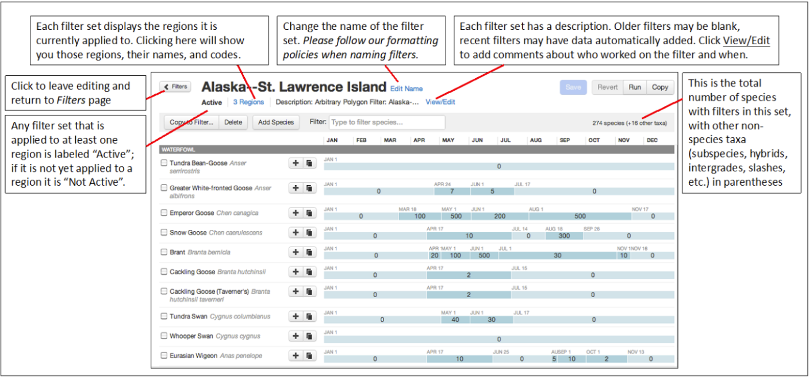
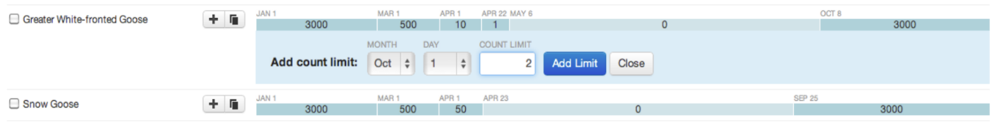

Filter Basics
Filters determine what records are sent to the Review Queue. Unusual records get “flagged” when filter limits are exceeded due to a species reported out-of-range, out-of-season, or in atypically high numbers.
Filters also control what the observer sees on their data entry checklist. The eBird checklist interface has two states:
- Expected species - every species with a filter limit set at a 1 or higher for that date
- Rare species - every species with a filter set to zero for that date.
When an observer initiates a checklist on eBird Mobile or the eBird website, the checklist will automatically display the expected species based on filter values for that location and date. Rare species are by default not displayed, but observers can access them by entering common names or quick entry codes into the species box. Any species without a filter must be manually added to the list by the observer.
Filters Should:
- Represent a reasonable maximum daily count for that species at a specific site within the filter area on a given date
- Reflect normal seasonal fluctuations in abundance as accurately as possible (in other words, filters for migratory species should not be the same value year-round)
- Be “living documents”; inspected regularly (at least once per year), and adjusted as necessary
- Be your best estimates – they don’t need to be perfect, just do your best
- Be data informed – Use the bar charts and high counts tools to help find the right limits
Filters Should Not:
- Be set to the species’ all-time record high count (remember, filters should represent a typical maximum count that could be obtained in a single day of birding at a specific site. Regional record high counts are unlikely to be typical)
- Be so conservative that they regularly flag acceptable counts
- Be so loose that they miss major numerical typos or mis-entered counts
- Be outdated (see below)
Signs of outdated filters:
- filter limits of 10,000 or 100,000 for many species
- filter limits that start or end on the 1st of the month or have year-round values for migratory species
- filter limits that do not reflect scaled migration periods (for example: most migratory species go from zero to a low number, then reach a peak, then drop to a low number again, and then reach zero again)
We recommend watching our 2020 webinar on filters to get the most out of editing and managing your filters.
Filter Examples
A basic example: 1-4 Northern Shrikes are usually seen in a single day in January in Ontario. However, 5 individuals pushes the limits of what is credible in a single checklist at a single site without peer review or documentation. Therefore, the filter for Northern Shrike in Ontario should be set at 4 individuals for January. All reports of 5 or more Northern Shrikes in January will then be flagged for review in eBird.
Species with high abundance but patchy distribution: For birds that occur in large numbers but few locations within the filter area, such as waterfowl, continue to set the filter at the highest number you would expect to find in the area during a day’s birding. For example: if up to 10,000 Redheads can typically be found in a handful of lakes, but any report of more than 10,000 might be questionable, then set the Redhead filter to 10,000 for the entire region – even if the 10,000 Redheads are concentrated in only a few bodies of water.
Expected species that need careful consideration: Sometimes you still want to review records of expected but commonly mis-reported species (i.e., species with high error rates like Northern Goshawk or Common Raven). You may consider setting the filter artificially low to try and catch errors. A good compromise is to set the filter limit at 1, ensuring that the species appears on the default checklist for species entry, but if anyone reports more than one, the record will be reviewed.
Editing a Filter
If you have permissions to edit a filter, it will appear on the Filters page in the Review Tools. When you click on the blue filter name, you will see a page that looks like this:

Additional Notes on the Filter Editing Page:
Naming filters: Accurate filter names are essential for our filter editing during the taxonomy update process. Filter names are also displayed publicly in eBird Mobile: on a running checklist, check under Checklist Settings and note the Bird List. Any editor can rename filters, but we do request that you retain the “parent region” with the structure “Colombia–”, “Manitoba–”, or “New Jersey–”. Contact us if you would have questions before renaming filters.
Regions: It is very important for you to double-check to ensure that the filter is properly assigned to regions. If you spot an error, let eBird Central know.
Copying Filters: Copy is useful for duplicating filters. For example: if the current filter is applied to two counties, and you’d like to give each county its own filter, you can create a copy of the existing filter and rename both the original and the new one to indicate their new specific counties. After copying a filter, edit each as needed and provide eBird Central with links to the filters along with the county or state codes (such as TX-101) they should be applied to. You can find these codes in the region page URL or in the “regions” link for existing filters. If you make a copy that you don’t need, please rename it “delete” and it will be removed within a day.
Activating new filters
To create a new filter please follow these steps:
Communicate with your review team if there are other reviewers in your region.
Click copy on the most appropriate existing filter.
The new filter will be titled “Copy of [old filter name]”. Note that it says Not Active. Rename the filter to the region you are making it for, following the standards described in Naming filters above.
Edit the species list and values to match the region you are making the filter for. Bar charts are a useful tool for this.
Once complete, send us the following. You can either email John (jfg228@cornell.edu), Jenna (jenna.curtis@cornell.edu and Marshall (mji26@cornell.edu), or post in #review-assignments in Slack.
Filter name, e.g., California–Los Angeles County–Coast
Filter URL or ID, e.g., https://review.ebird.org/admin/viewFilter.htm?checklistID=CL25181 or just CL25181
Region code(s) for which it is to be activated. For most regions, you can get this from the URL of the eBird Explore page, e.g., IN-KL-ER for https://ebird.org/region/IN-KL-ER
- For pelagic filters, which use arbitrary polygons, please use these instructions: Pelagic Filters in eBird
The UserID of any reviewers who need editing access.
eBird Central will activate the filter and make sure you can edit it.
Deleting filters
The process to delete a filter is simple: simply revise the name of the filter to be exactly “delete”. We have a process that will remove these filters permanently once daily. Filters should be deleted if there is an official, active filter that takes precedence or if a copy was made inadvertently or is no longer needed. It is very helpful for eBird Central if excess filters can be deleted promptly. NOTE: It is only possible to delete a filter that is NOT active (i.e., not applied to a region or polygon). Please make sure that your filter is not active before renaming it to “delete”.
Running and Rerunning Data
This is one of the best tools in a filter editor’s arsenal to process data and create the most accurate filters. Click Run to pass existing records through the filter, see what records are flagged, make corrections to the filter, and then repeat this process.
What happens when you “Rerun” a filter?
You will receive an email notification once the run is complete, along with statistics from the data re-run (i.e., # of records added or removed). By checking records from the review region, you can then adjust the filters as needed and again run the data to remove or add more records. The Run button will be deactivated while a run is in progress or if the filter has not been edited since the last run. On rare occasions, a backlog of filter reruns can mean that the Run button stays grayed out for many hours. Let us know if it stays grayed out for even longer.
Reviewed and Rereview records will not be affected by a rerun, but Deferred and Unreviewed records will be Accepted and removed from your Review Queue if they do not exceed the new filter limits (be cautious with Deferred records for this reason!). Similarly, previously Accepted, Unreviewed records that exceed new filter limits will be added to your Review Queue.
Editing Species in a Filter
The Species List is where most filter editing is done. The filter is completely interactive and most processes should be intuitive. Some controls are to the right of the species name, while the most common ones are within the monthly limits and can be slid back and forth. Here is a guide to your options:

Change or delete count limits - Simply click inside a filter limit to change it. Once you do, you can type a new number or click DELETE. If you change a number to be the same as an adjacent number, eBird will automatically merge the two when saved. Thus, in the following example, if the May 1-June 1 period is changed to 0, then the new summer range will have a zero from May 1-Oct 8. When you delete a limit, it will adopt the count limit to the left of the former period. Note that after this happens, you can easily drag the bar to change the date.

Change date limits – When you hover over the divisions between date ranges, your cursor will change to allow you to drag the vertical dividers to the left or right. In the example below, the spring departure of Greater White-fronted Goose was adjusted. Note that once changes have been made, a blue star appears to the right of the bird’s name, indicating that you have changes that need to be saved. Please remember to save periodically and especially before leaving your editing session!

Add date range – Click the + symbol to the right of a bird’s name to add a filter period. Note that you only add one date, so the period will be added to the LEFT of the next chronological period. In the example below, a filter period is being added with a beginning date of Oct 1 and a value of 2. The period will extend to (but not include) Oct 8. Note that if a period were added starting Oct 15, the end date for that period would be Dec 31.

Copy dates and filter limits – Click the Copy icon to the right of a species name (looks like a pair of stacked pages) to copy the filter values to another species. You will be given two options: 1) Copy to existing lets you select one or more species with existing filter limits to replace with these values; or 2) Copy to new, which allows you type a species name and create new filter limits for that species. This latter option is especially useful for adding subspecies since they also take their parent species’ values. In either case, it can be helpful to copy the values as a starting point and then to edit them afterwards. In the example above, clicking the Copy icon for Snow Goose will apply the limits of 3000, 500, 50, 0, and 3000 to any other species you select.